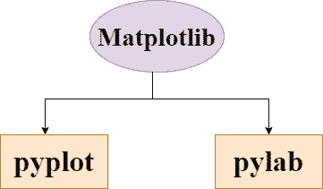

Matplotlib 简介
原文：https://www.studytonight.com/matplotlib/introduction-to-matplotlib
在本教程中，我们将介绍 Python 中 Matplotlib 库的基本介绍，Matplotlib 中的重要模块，如何安装 Matplotlib 模块，并且我们将了解该库对于数据可视化的用处。
什么是 Matplotlib？
Matplotlib 基本上是建立在 NumPy 数组上的数据多平台可视化库。该库旨在与更广泛的 SciPy 堆栈合作，该堆栈包括用于机器学习和数据科学的不同 Python 模块。
Matplotlib 是默认的(排序) Python 数据可视化包。
由于 Matplotlib 是一个可视化库，这些可视化让我们能够像图表和绘图一样以可视化的形式表示大量的数据。
Matplotlib 在从数组中的数据创建 2D 图时很有用。
Matplotlib 库的灵感来源于 MATLAB 编程语言，它还提供了类似于的 MATLAB 图形界面。
该库可轻松与用于数据操作的Pandas 包 集成。
Pandas 和马特洛特利布 的组合，数据角力可以和可视化一起完成，人们可以从数据中获得有价值的见解。
Python 中的 Matplotlib 库主要被称为 Grammer of Graphics ，是 Python 中最常用的库，用于创建图表和绘图。
Matplotlib 可以与 Jupyter 笔记本、 web 服务器应用和IPython shell一起使用。
由约翰·d·亨特在 2003 年写成，诞生了 0.1 版本。Matplotlib 在被太空望远镜科学研究所采用为首选的绘图包时，获得了的早期提升。
目前稳定版本为 2.2.0 ，发布于 2018 年。
Matplotlib 中的重要模块
Matplotlib 库中有两个重要模块，如下所示:

1. pyplot
它是 Matplotlib 中的一个重要模块。在代码示例的后续教程中，您将经常看到
matplotlib.pyplot被使用。这个模块主要是给我们提供了一个界面，允许我们自动隐式创建人物及其轴到实现想要的剧情。
这是一个很棒的模块，当你快速想要在没有实例化任何图形或任何轴的情况下绘制一些东西。
2.派尔巴
它是 Matplotlib 的另一个重要模块。
您需要将该模块安装在 matplotlib 模块旁边。
模块 pylab 帮助导入 NumPy 和 pyplot ，建议当需要使用数组，进行数学运算，需要访问绘图功能时使用。
不建议在使用 IPython 内核的情况下使用。
安装 Matplotlib
matplotlib 的相关包和 Matplotlib 本身以轮包的形式在标准 Python 包存储库中可用。因此，它可以很容易地安装在苹果操作系统，窗口，Linux 等。使用画中画包管理器。
注意:你必须在你的机器上安装 Python，才能安装 matplotlib 模块。这是我们的 Python 安装指南。
您只需要打开命令提示符，编写以下给定命令:
python -m pip install -U matplotlib
如果您正在使用 Jupyter Notebook，那么需要注意的是，Jupyter Notebook 附带了许多预安装的库，如 Numpy、Pandas、Matplotlib、Scikit-Learn，因此您不必担心单独安装这些模块/库。
总结:
因此，在本教程中，我们学习了什么是 matplotlib 模块，为什么它如此受欢迎，matplotlib 的不同模块是有用的，然后我们还学习了如何安装 matplotlib 模块。